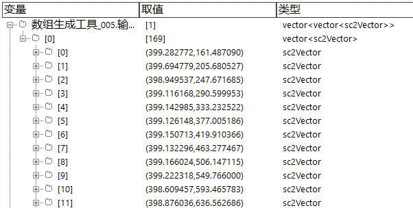
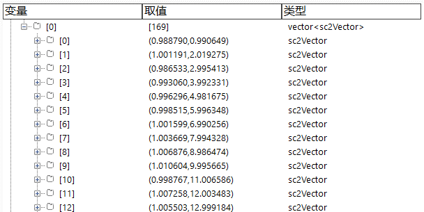
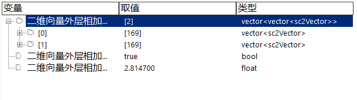

Ghép hai vector<vector



| Phân loại | Tên tham số | Mô tả tham số |
|---|---|---|
| Cửa sổ thuộc tính | Không có | Không có |
| Cửa sổ hình ảnh | Không có | Không có |
| Chuỗi dữ liệu | Vector 2D đầu vào A | Nhóm vector 2D đầu tiên đầu vào. |
| Vector 2D đầu vào B | Nhóm vector 2D thứ hai đầu vào. | |
| Giao diện nâng cao | Không có | Không có |
| Phân loại | Tên tham số | Mô tả tham số（Ý nghĩa tham số） |
|---|---|---|
| Cửa sổ giám sát | Vector 2D đầu ra | Kết quả sau khi ghép nối. |
| Kết quả thực thi | Kết quả thực thi của công cụ. | |
| Thời gian thực thi | Thời gian thực thi của công cụ. | |
| Cửa sổ hình ảnh | Kết quả thực thi | Hiển thị kết quả thực thi công cụ, thành công hiển thị “OK”, thất bại hiển thị “NG”, giống với tham số kết quả thực thi ở cửa sổ giám sát. |
| Chuỗi dữ liệu | Vector 2D đầu ra | Kết quả đã ghép nối để cung cấp cho các công cụ khác sử dụng, giống với tham số “Vector 2D đầu ra” ở cửa sổ giám sát. |
Không có
参见“\Samples\二维向量外层相加工具.gvp”。